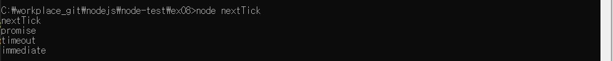

// nextTick.js
setImmediate(() => {
console.log('immediate');
});
process.nextTick(() => {
console.log('nextTick');
});
setTimeout(() => {
console.log('timeout');
}, 0);
Promise.resolve().then(() => console.log('promise'));

process.nextTick은 setImmediate나 setTimeout보다 먼저 실행됩니다.
# Warning : 마이크로태스크의 재귀 호출
process.nextTick으로 받은 콜백 함수나 resolve된 Promise는 다른 이벤트 루프에서 대기하는 콜백 함수보다도 먼저 실행됩니다.
그래서 비동기 처리를 할 때 setImmediate보다 process.nextTick을 더 선호하는 개발자도 있습니다.
하지만 이런 Microtask를 재귀 호출하게 되면 이벤트 루프는 다른 콜백 함수보다 Microtask를 우선하여 처리하므로
콜백 함수들이 실행되지 않을 수도 있습니다.